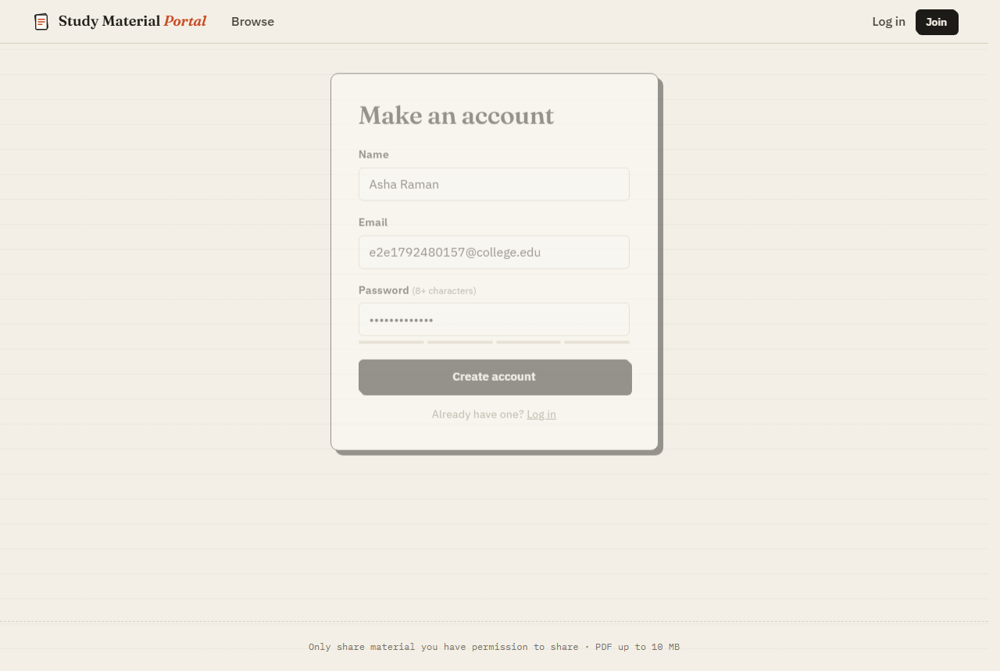
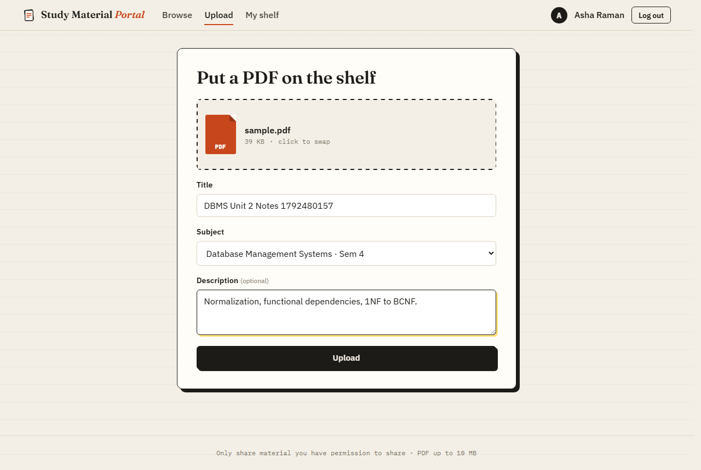
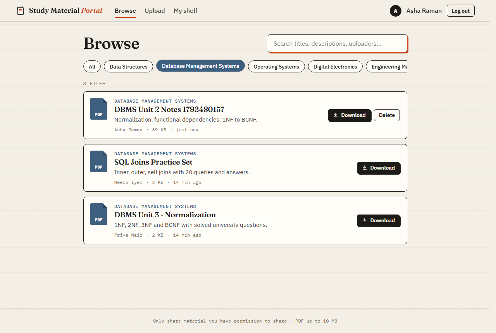
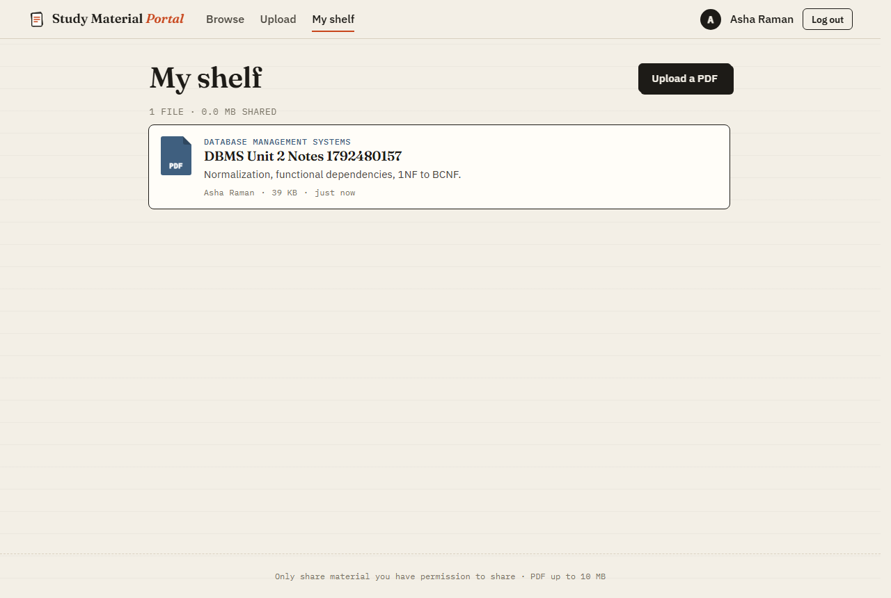
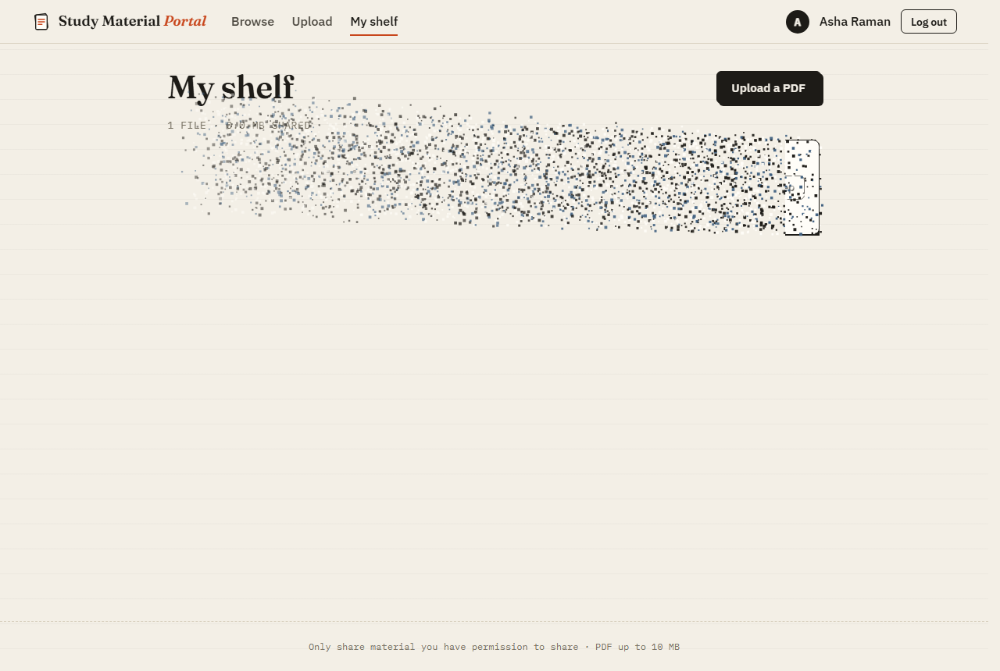
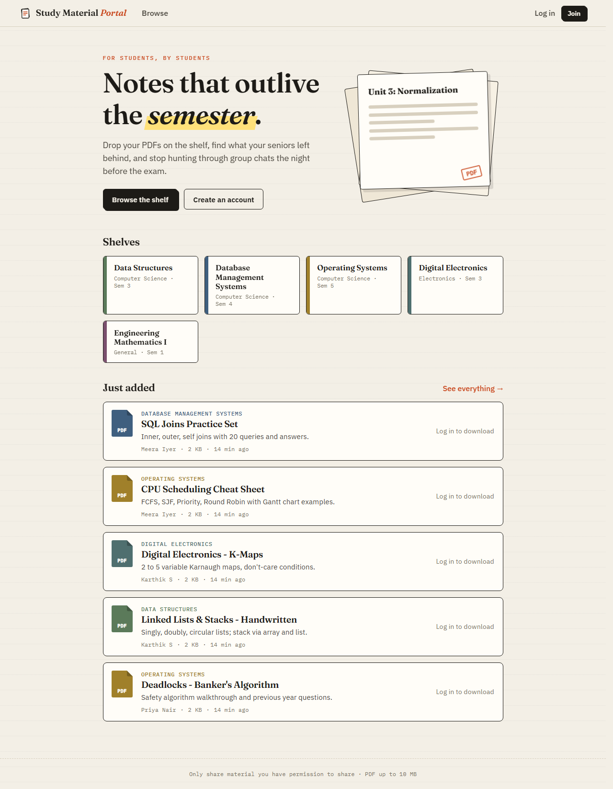
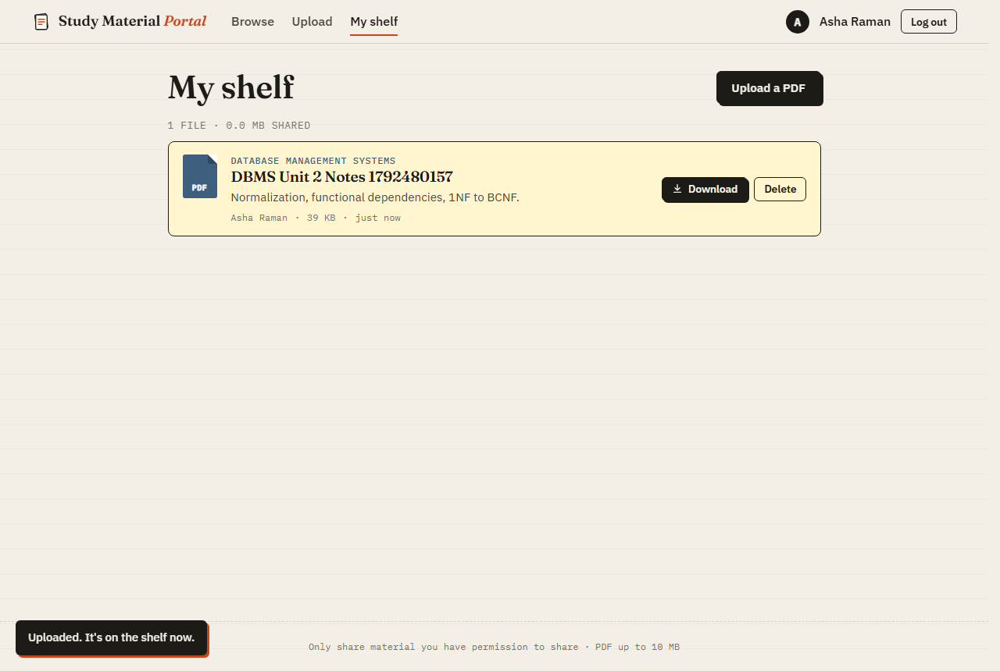
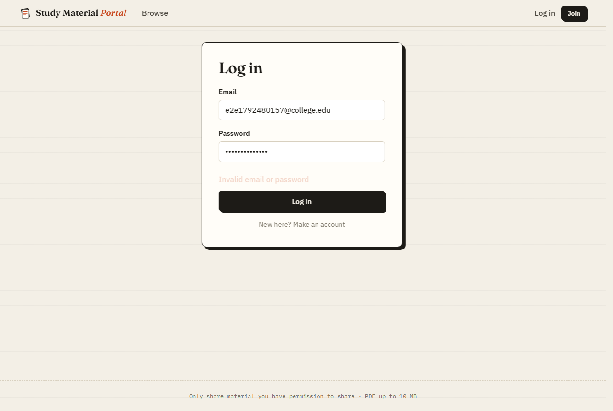
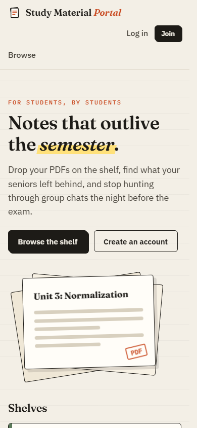

| Team No: 14 | |
|---|---|
| Name | Register Number |
| Abinaya S | 2024115032 |
| Akileswaran A | 2024115052 |
Students rely on notes, question banks and summaries passed between batches, but these files are usually scattered across messaging groups and personal drives where they are hard to search and easily lost. This project builds the Study Material Portal, a full-stack web application where registered students upload PDF study materials tagged by subject and semester, browse and search what others have shared, download files, and manage their own uploads.
The system uses a React 18 single-page frontend built with Vite, a Spring Boot 3.5 REST backend on Java 21, and a PostgreSQL 17 database whose schema is versioned with Flyway migrations. Uploaded files are stored on disk under server-generated names while their metadata lives in the database. Authentication uses server-side sessions with BCrypt password hashing and CSRF protection. Uploads are validated by size, declared content type and PDF magic bytes.
The interface uses a paper-and-ink "library shelf" theme, with animations that give the user feedback: material cards disintegrate into particles when deleted, uploads use a drag-and-drop zone with live progress, and lists animate into place. The full workflow was verified with an automated end-to-end test (Playwright) that drives a real browser against the running stack and checks the resulting PostgreSQL rows and stored files. All 13 test scenarios passed.
The Study Material Portal is a web application that acts as a shared, searchable shelf of PDF study material for the students of an institution. A student can create an account, upload a PDF (for example scanned notes, a solved question paper or a formula sheet) and tag it with a subject. Every visitor can browse the shelf, filter it by subject and search it, and logged-in students can download any file. Each student has a "My shelf" page listing their own uploads, which they can delete.
The application has three parts: a React frontend that runs in the browser, a Spring Boot REST API, and a PostgreSQL database. PDF files are stored on the server's disk, and the database records who uploaded which file, for which subject, and when.
Study material today circulates through chat groups and personal cloud folders. There, it is buried under conversation, cannot be filtered by subject, and disappears when a group is archived or a senior graduates. There is no central, searchable, access-controlled place where students of an institution can share PDF study material organised by subject and semester, while keeping ownership of what they upload and protecting the server from unsafe files.
The portal targets a single institution. It supports PDF files up to 10 MB, a list of subjects maintained in the database, and two roles: STUDENT and ADMIN. Content moderation, ratings, comments and in-browser PDF preview are outside the current scope and are listed as future enhancements.
In practice, study material is shared in three informal ways:
| Limitation | Effect on students |
|---|---|
| No organisation by subject or semester | Finding the right file means scrolling through hundreds of messages. |
| No search | File names like IMG_2041.pdf or notes final(2).pdf cannot be found by topic. |
| Material depends on individuals | When a group is archived, a link expires or a senior graduates, the files are gone. |
| No ownership control | Anyone in a shared folder can delete or overwrite others' files; in a chat, files cannot be withdrawn at all. |
| No validation | Any file type can be shared, including mislabelled or harmful files. |
| Repeated requests | Every batch asks for the same notes again before exams. |
The proposed Study Material Portal replaces these channels with one web application. Every upload is tagged with a subject (and therefore a department and semester). It appears on a shared shelf that can be filtered and searched, and is stored on a server instead of on someone's phone. Accounts identify who uploaded what. Only the uploader (or an administrator) can delete a file. Every upload is checked to be a genuine PDF under 10 MB.
| Aspect | Existing system | Proposed system |
|---|---|---|
| Organisation | Mixed into chat history | Every file tagged with a subject; filter tags per subject |
| Finding material | Manual scrolling | Instant search over title, description and uploader |
| Persistence | Lost when groups or links die | Stored centrally in PostgreSQL and on server disk |
| Ownership | None | Uploader recorded; only owner or admin can delete |
| Safety | Any file type | PDF only, 10 MB limit, file content verified |
| Access | Must be in the right group | Anyone can browse; students log in to download and upload |
| Devices | Phone-centric | Responsive web app for desktop and mobile |
| ID | Requirement | Actor |
|---|---|---|
| FR1 | The system shall let a visitor register with name, email and a password of at least 8 characters, and reject an email that is already registered. | Guest |
| FR2 | The system shall let a registered user log in and log out. | Student |
| FR3 | The system shall list all subjects with department and semester. | Guest |
| FR4 | The system shall list materials newest first and filter them by subject. | Guest |
| FR5 | The system shall let users search the listed materials by title, description and uploader name. | Guest |
| FR6 | The system shall let a logged-in user upload a PDF with title, optional description and subject. | Student |
| FR7 | The system shall reject uploads that are not PDF or exceed 10 MB. | System |
| FR8 | The system shall let a logged-in user download any material with its original file name. | Student |
| FR9 | The system shall show a logged-in user a list of their own uploads ("My shelf"). | Student |
| FR10 | The system shall let users delete their own uploads, and administrators delete any upload, removing both the record and the file. | Student, Admin |
| FR11 | The system shall redirect anonymous users who open Upload or My shelf to the login page. | System |
| Category | Requirement | How it is met |
|---|---|---|
| Security | Passwords must never be stored in plain text; sessions and forms must be protected. | BCrypt hashing, HttpOnly session cookie, session-id rotation at login, CSRF tokens, PDF magic-byte check, random stored file names. |
| Data integrity | Invalid data must not reach the database. | UNIQUE, CHECK and FOREIGN KEY constraints in PostgreSQL; bean validation on requests; file deleted again if the insert fails. |
| Performance | Lists must load quickly as data grows. | Indexes on subject, uploader and creation time; page size limited to 100 rows. |
| Usability | Every action gives visible feedback. | Progress bar, toasts, inline confirmation, error messages, loading placeholders. |
| Responsiveness | Usable on phones. | Fluid layout tested at 390 px width with no horizontal scrolling. |
| Accessibility | Respect user settings and assistive technology. | Animations disabled under "reduce motion"; labelled form fields; ARIA roles on filter tabs and toasts. |
| Maintainability | Schema changes must be repeatable. | Versioned Flyway migrations; Hibernate in validate mode. |
| Portability | Runs on any OS with Java and Node. | Configuration through environment variables (DB_PASSWORD, UPLOAD_DIR). |
| Resource | Minimum |
|---|---|
| Processor | Dual-core 2 GHz or better |
| Memory | 4 GB RAM (8 GB recommended for development) |
| Storage | 2 GB free, plus space for uploaded PDFs |
| Operating system | Windows 10/11, Linux or macOS |
| Software | JDK 21, Maven 3.9+, Node.js 20+, PostgreSQL 17, a modern web browser |
The application follows a three-tier architecture. The React single-page application runs in the browser and talks to the backend only through a JSON REST API under /api. During development the Vite dev server forwards /api to Spring Boot, so the browser sees a single origin and no CORS configuration is required. The backend is layered into controllers, services, repositories and a storage service. PostgreSQL holds all structured data, and PDF bytes are written to a directory on disk.
There are three actors. A Guest (not logged in) can browse, filter and search materials, register and log in. A Student can do everything a Guest can, and can also upload, download, view their own uploads and delete them. An Admin can do everything a Student can, and can also delete any material.
The Level-0 (context) DFD shows the system as one process exchanging data with its users and its two data stores.
Uploading is the most important workflow, because it passes through every layer and every safety check. The flowchart shows each decision point and what the user sees when a check fails.
The schema is created by Flyway migration V1__create_initial_schema.sql and seeded by V2__seed_subjects.sql (both in backend/src/main/resources/db/). Hibernate runs with ddl-auto=validate, so the application refuses to start if the Java entities and the real tables drift apart.
| Column | Type | Constraint | Description |
|---|---|---|---|
| id | BIGINT | PK, identity | User id |
| name | VARCHAR(100) | NOT NULL | Display name |
| VARCHAR(255) | NOT NULL, UNIQUE | Login name, stored lower-case | |
| password_hash | VARCHAR(255) | NOT NULL | BCrypt hash |
| role | VARCHAR(20) | CHECK IN ('STUDENT','ADMIN') | Default STUDENT |
| created_at | TIMESTAMPTZ | DEFAULT now | Registration time |
| Column | Type | Constraint | Description |
|---|---|---|---|
| id | BIGINT | PK, identity | Subject id |
| name | VARCHAR(150) | NOT NULL | e.g. Database Management Systems |
| department | VARCHAR(100) | NOT NULL | e.g. Computer Science |
| semester | SMALLINT | CHECK 1–12 | Semester taught |
| UNIQUE (name, department, semester) | |||
| Column | Type | Constraint | Description |
|---|---|---|---|
| id | BIGINT | PK, identity | Material id |
| title | VARCHAR(200) | NOT NULL | Display title |
| description | TEXT | Optional summary | |
| original_filename | VARCHAR(255) | NOT NULL | Name used on download |
| stored_filename | VARCHAR(255) | NOT NULL, UNIQUE | Random UUID name on disk |
| file_path | VARCHAR(1000) | NOT NULL | Path at upload time |
| content_type | VARCHAR(100) | NOT NULL | Always application/pdf |
| file_size | BIGINT | CHECK > 0 | Bytes |
| uploaded_by | BIGINT | FK → app_users, ON DELETE RESTRICT | Owner |
| subject_id | BIGINT | FK → subjects, ON DELETE RESTRICT | Subject |
| created_at | TIMESTAMPTZ | DEFAULT now | Upload time |
Indexes on subject_id, uploaded_by and created_at DESC support the three main queries: filter by subject, list one user's uploads, and show newest first.
| Layer | Technology | Version | Used for |
|---|---|---|---|
| Frontend | HTML5 | – | Single page index.html that React mounts into; semantic elements (header, nav, main, article, form) |
| CSS3 | – | All styling in index.css: custom properties for colours, Flexbox and Grid layout, @keyframes animations, media queries for mobile, prefers-reduced-motion | |
| JavaScript (ES modules) | – | Application logic; Canvas 2D API for the particle effect; Web Animations API | |
| React | 18.3.1 | Component-based UI, state with hooks (useState, useEffect, useRef), Context for login state | |
| React Router | 6.30.6 | Client-side routes and protected pages | |
| Axios | 1.20.0 | HTTP client with upload progress and automatic CSRF header | |
| Backend | Java | 21 (Temurin) | Backend language |
| Spring Boot | 3.5.16 | Web framework with embedded Tomcat | |
| Spring Security | via Spring Boot | Sessions, BCrypt, CSRF, URL access rules | |
| Spring Data JPA / Hibernate | via Spring Boot | Mapping Java entities to tables, generated queries | |
| Bean Validation | via Spring Boot | @Email, @Size, @NotBlank on request bodies | |
| Database | PostgreSQL | 17 | Relational data store with constraints and indexes |
| Flyway | via Spring Boot | Versioned SQL migrations | |
| Tools | Vite | 6.4.4 | Dev server with /api proxy, production build |
| Maven | 3.9.9 | Backend build and dependency management | |
| Node.js / npm | 24 / 11 | Frontend tooling | |
| Playwright (Python) | 1.62 | Automated end-to-end browser tests | |
| psql | 17 | Inspecting and verifying database contents | |
| Visual Studio Code | – | Code editor | |
| Git and GitHub | 2.52 | Version control and source hosting |
web_project/ ├── backend/ Spring Boot application │ ├── pom.xml │ └── src/main/ │ ├── java/portal/ all 15 backend classes in one package │ └── resources/ │ ├── application.properties │ └── db/ V1__create_initial_schema.sql, V2__seed_subjects.sql ├── frontend/ React application │ ├── index.html, vite.config.js, package.json │ └── src/ │ ├── main.jsx, App.jsx entry point and routes │ ├── api.js, auth.jsx HTTP client and login state │ ├── MaterialCard.jsx one material card (download / delete) │ ├── effects.jsx particle animation and toasts │ ├── index.css all styles and CSS animations │ └── pages/ Home, Browse, Upload, My shelf, Login, Register ├── e2e_test.py end-to-end test └── docs/ this report, screenshots
| Module | Responsibility | Main files |
|---|---|---|
| Authentication | Register, log in, log out, current user; session creation with session-fixation protection | AuthController, SecurityConfig, auth.jsx, LoginPage, RegisterPage |
| Subjects | List subjects ordered by department and semester | SubjectController, SubjectRepository |
| Materials | Upload, list with subject filter and paging, download, delete with ownership checks | MaterialController, MaterialService, MaterialRepository |
| File storage | Save files under random UUID names, stream them back, delete them | LocalFileStorageService |
| Error handling | Turn exceptions into consistent {"error": "..."} JSON responses | GlobalExceptionHandler |
| User interface | Pages, cards, animations, notifications | pages/*, MaterialCard.jsx, effects.jsx, index.css |
The registration form has a live password-strength meter and requires at least 8 characters. Emails are stored lower-case and must be unique (HTTP 409 otherwise). After registering, the user is logged in automatically. A wrong password shakes the login form and shows a clear message.

The upload page has a drag-and-drop zone with an animated dashed border. The title is pre-filled from the file name. Non-PDF and oversized files are rejected before anything is sent, and a progress bar shows the upload as it happens.

The Browse page shows a tag for each subject. The selected subject is kept in the URL (?subject=2), so a filtered view can be bookmarked or shared. The search box filters by title, description and uploader as the user types.

Delete is shown only on the user's own cards. Clicking it asks "Delete for good?" inside the card. After the server confirms the delete, the card breaks apart into particles from left to right and the gap in the list closes smoothly.


The declared content type is set by the client and cannot be trusted alone, so the server also reads the first five bytes of the file, which must be %PDF-.
private static boolean isPdf(MultipartFile file) {
if (!"application/pdf".equalsIgnoreCase(file.getContentType())) return false;
try (InputStream in = file.getInputStream()) {
return new String(in.readNBytes(5), StandardCharsets.US_ASCII).equals("%PDF-");
} catch (IOException e) {
return false;
}
}
The file is written first, then the row is inserted. If the insert fails, the file is deleted again so the disk never holds a file the database doesn't know about.
String stored;
try {
stored = storage.store(file);
} catch (IOException e) {
throw status(HttpStatus.INTERNAL_SERVER_ERROR, "Could not save file");
}
try {
String original = file.getOriginalFilename() == null ? "material.pdf"
: java.nio.file.Path.of(file.getOriginalFilename()).getFileName().toString();
StudyMaterial m = new StudyMaterial(title.trim(), description, original, stored,
storage.pathOf(stored).toString(), file.getSize(), user, subject);
return toResponse(materials.saveAndFlush(m));
} catch (RuntimeException e) {
storage.delete(stored); // don't leave an orphan file if the DB write fails
throw e;
}
public void delete(Long id, String email) {
StudyMaterial m = find(id);
AppUser user = users.findByEmail(email).orElseThrow();
if (!m.getUploadedBy().getId().equals(user.getId()) && !"ADMIN".equals(user.getRole())) {
throw status(HttpStatus.FORBIDDEN, "You can only delete your own uploads");
}
materials.delete(m);
storage.delete(m.getStoredFilename());
}
Registration, login and read-only browsing are public. Everything else (upload, download, delete, My shelf) requires a logged-in session. An anonymous request receives HTTP 401 instead of a login page.
.authorizeHttpRequests(a -> a
.requestMatchers("/api/auth/register", "/api/auth/login").permitAll()
.requestMatchers(HttpMethod.GET, "/api/subjects", "/api/materials", "/api/materials/{id}").permitAll()
.anyRequest().authenticated())
.exceptionHandling(e -> e.authenticationEntryPoint(new HttpStatusEntryPoint(HttpStatus.UNAUTHORIZED)))
Spring Data generates the SQL from the method names: findBySubjectId becomes SELECT … WHERE subject_id = ?, with paging and sorting applied from the Pageable argument.
public interface MaterialRepository extends JpaRepository<StudyMaterial, Long> {
Page<StudyMaterial> findBySubjectId(Long subjectId, Pageable pageable);
Page<StudyMaterial> findByUploadedById(Long userId, Pageable pageable);
}
const body = new FormData();
Object.entries(f).forEach(([k, v]) => body.append(k, v));
body.append("file", file);
setError("");
setProgress(0);
try {
const r = await api.post("/materials", body, { onUploadProgress: (p) => p.total && setProgress(p.loaded / p.total) });
setProgress(1);
setDone(true);
toast("Uploaded. It's on the shelf now.");
setTimeout(() => nav("/my-uploads", { state: { fresh: r.data?.id } }), 750);
} catch (err) {
setError(errorMessage(err));
setProgress(null);
}
The card's rectangle is divided into a 5-pixel grid. Each cell becomes a particle in one of the card's colours. A particle is released when the left-to-right "sweep" reaches its column, then drifts up and to the right while fading out. The real card is clipped away in step with the sweep.
for (let y = 0; y < r.height; y += step)
for (let x = 0; x < r.width; x += step)
ps.push({
x: r.left + x, y: r.top + y,
vx: 0.6 + Math.random() * 2.2, vy: -(0.4 + Math.random() * 1.6),
born: (x / r.width) * sweep + Math.random() * 90,
size: 1.5 + Math.random() * 2.5,
c: palette[(Math.random() * palette.length) | 0],
});
el.animate([{ clipPath: "inset(0 0 0 0)" }, { clipPath: "inset(0 0 0 100%)" }], { duration: sweep + 60, easing: "linear", fill: "forwards" });
The frontend and backend communicate only through the REST API below. All requests go through one Axios instance (frontend/src/api.js) with base URL /api. In development, Vite forwards /api to http://localhost:8080 (vite.config.js), so the browser treats frontend and backend as one origin. Cookies therefore work without CORS configuration. Spring Security sets an XSRF-TOKEN cookie, and Axios automatically copies it into the X-XSRF-TOKEN header on every state-changing request. Errors come back as {"error": "message"}, which the UI shows directly through errorMessage().
const axiosClient = axios.create({
baseURL: "/api",
adapter: import.meta.env.VITE_MOCK ? mockAdapter : undefined,
});
export const errorMessage = (e) => e.response?.data?.error ?? "Request failed";
| Method | Endpoint | Access | Purpose | Used by |
|---|---|---|---|---|
| POST | /api/auth/register | Public | Create account (201; 409 if email exists) | RegisterPage |
| POST | /api/auth/login | Public | Authenticate and start session | auth.jsx |
| POST | /api/auth/logout | User | Invalidate session | auth.jsx |
| GET | /api/auth/me | User | Current user (401 if anonymous) | auth.jsx on load |
| GET | /api/subjects | Public | All subjects | Home, Browse, Upload |
| GET | /api/materials?subjectId=&size= | Public | Newest-first list, optional subject filter | Home, Browse |
| GET | /api/materials/{id} | Public | One material's details | – |
| POST | /api/materials (multipart) | User | Upload a PDF with title, description, subject | UploadPage |
| GET | /api/materials/{id}/download | User | Stream the PDF as an attachment | MaterialCard |
| DELETE | /api/materials/{id} | Owner / Admin | Delete row and file (403 for others) | MaterialCard |
| GET | /api/users/me/materials | User | The caller's own uploads | MyUploadsPage |
The interface uses a "library shelf" visual language: warm paper background with faint ruled lines, ink-black outlines with offset shadows, a serif display face (Fraunces) for headings, a monospace face (IBM Plex Mono) for metadata, and one red-pencil accent colour. Each subject has its own colour, used on its shelf tile, its filter tag and the PDF icon of every card in that subject.
| Interaction | Animation | Purpose |
|---|---|---|
| Delete | Inline confirmation, then particle disintegration and smooth collapse | Confirms a permanent action clearly |
| Upload | Drag-and-drop zone with moving dashed border; live progress bar; icon tucks away on success | Shows the file is being received |
| New upload | Card drops in with a spring and is briefly highlighted on My shelf | Shows where the new item landed |
| Lists | Cards rise in one after another | Guides the eye down the list |
| Loading | Placeholder cards with a shimmer | Avoids layout jumps |
| Errors and notifications | Form shakes on wrong login; toasts slide in and fade | Immediate, non-blocking feedback |
The system was tested end to end with an automated Playwright script (e2e_test.py). It launches Chromium and drives the real React UI served by Vite, which talks to the running Spring Boot backend connected to a local PostgreSQL 17 database. After each action, the test also queries the database directly through psql and checks the upload directory on disk. That way it confirms what was actually stored, not only what the screen shows. Each run creates a unique user and removes it afterwards.
| # | Test case | Expected result | Req. | Status |
|---|---|---|---|---|
| 1 | Open home page | Subject shelves shown equal the rows in subjects | FR3 | PASS |
| 2 | Visit /upload while logged out | Redirected to /login | FR11 | PASS |
| 3 | Register a new student | Row in app_users, role STUDENT, BCrypt hash ($2a$) | FR1 | PASS |
| 4 | Register the same email again | HTTP 409 Conflict | FR1 | PASS |
| 5 | Pick a .txt file for upload | "That isn't a PDF" error, nothing sent | FR7 | PASS |
| 6 | Upload a valid PDF | Row in study_materials; file on disk starts with %PDF-; card on My shelf | FR6, FR9 | PASS |
| 7 | Filter by subject and search | URL has ?subject=; search narrows to exactly 1 card | FR4, FR5 | PASS |
| 8 | Download the material | File received with original name and PDF header | FR8 | PASS |
| 9 | Delete the material | Confirmation, particle animation, row and file both removed | FR10 | PASS |
| 10 | Log out | /api/auth/me returns 401 | FR2 | PASS |
| 11 | Log in with wrong password | "Invalid email or password" shown | FR2 | PASS |
| 12 | Open on a 390 px phone viewport | No horizontal scrolling | NFR | PASS |
| 13 | Whole session | No uncaught JavaScript errors | NFR | PASS |
Result: 13 of 13 test cases passed. Test environment: Windows 11, JDK 21.0.12, PostgreSQL 17, Node 24, Chromium (Playwright 1.62).
Sample data uploaded through the API was then read back directly from PostgreSQL:
SELECT m.title, s.name AS subject, u.name AS uploader FROM study_materials m JOIN subjects s ON s.id = m.subject_id JOIN app_users u ON u.id = m.uploaded_by;
| Title | Subject | Uploader |
|---|---|---|
| DBMS Unit 3 - Normalization | Database Management Systems | Priya Nair |
| Engineering Maths I - Matrices | Engineering Mathematics I | Priya Nair |
| Deadlocks - Banker's Algorithm | Operating Systems | Priya Nair |
| Linked Lists & Stacks - Handwritten | Data Structures | Karthik S |
| Digital Electronics - K-Maps | Digital Electronics | Karthik S |
| CPU Scheduling Cheat Sheet | Operating Systems | Meera Iyer |
| SQL Joins Practice Set | Database Management Systems | Meera Iyer |
The finished application runs locally with the React frontend at http://localhost:5173, the Spring Boot API at port 8080 and the data in the study_portal PostgreSQL database. The screenshots below were captured automatically from the working system during the end-to-end test run.




| Objective (Section 1.3) | Status | Evidence |
|---|---|---|
| Secure registration and login | Achieved | BCrypt hashes in app_users; tests 3, 4, 10, 11 |
| Upload PDF with title, description, subject | Achieved | Row and file verified; test 6 |
| Browse, filter, search and download | Achieved | Tests 1, 7, 8 |
| View and delete own uploads; admin deletes any | Achieved | Ownership check in MaterialService.delete(); test 9 |
| Persistent storage in PostgreSQL with integrity rules | Achieved | Constraints in V1 migration; Section 7.3 |
| Responsive, animated interface | Achieved | Test 12; Figures 6.5 and 8.4 |
| Automated end-to-end tests | Achieved | 13 of 13 passing |
Testing against the real database instead of only the screen proved valuable. It confirmed, for example, that deleting a material removes both the database row and the file on disk, and that passwords are never stored in readable form. Enforcing rules in PostgreSQL (unique emails, valid roles, positive file sizes, foreign keys) as well as in Java means invalid data is rejected even if application code is later changed incorrectly.
Checking the PDF's first bytes on the server, rather than trusting the file extension or the browser, closes the most obvious abuse of an upload feature. Storing files under random names keeps user-supplied names away from file paths. On the interface side, the animations do real work: the particle effect confirms that a delete was permanent, and the progress bar removes uncertainty during large uploads. They are implemented in plain CSS and one canvas, so they add no extra libraries and are switched off for users who prefer reduced motion.
The Study Material Portal replaces scattered chat-group sharing with a single, searchable shelf of PDF study material. It was built as a three-tier web application: React and Vite on the frontend, Spring Boot 3.5 on Java 21 for the REST API, and PostgreSQL 17 for storage, with Flyway-managed schema migrations. Security concerns (password storage, sessions, CSRF and file validation) are handled at the framework level and in the database. The paper-themed, animated interface gives clear feedback for every action and works on phones.
All seven objectives set out in Section 1.3 were met, as shown in Section 8.2. Students can register, upload subject-tagged PDFs, find material through filters and search, download it and manage their own uploads. The complete flow, from the browser down to the database rows and files on disk, is verified by an automated end-to-end test suite in which all 13 scenarios pass.
tsvector, including text extracted from inside the PDFs.